Trần Thùy Linh
Sinh viên ngành Kỹ thuật Máy tính tại Đại học Công nghệ (VNU-UET)
Thông Tin Sinh Viên
Mục Tiêu Học Tập
- Nắm vững những kỹ năng số đã học, biết cách tổ chức công việc và quản lý tài liệu khoa học hơn.
- Rèn khả năng tìm kiếm và đánh giá thông tin một cách chính xác, tránh bị nhiễu bởi những nguồn không đáng tin.
- Sử dụng AI hiệu quả để tiết kiệm thời gian, học tập thông minh hơn và làm bài tốt hơn mà vẫn đảm bảo đúng tinh thần học thuật.
Mục Tiêu Của Portfolio
Purpose of the Portfolio
Ghi lại đầy đủ các sản phẩm học tập như hình ảnh, bài viết, prompt, kế hoạch nhóm hay video theo từng bài để thấy rõ sự thay đổi và cải thiện của bản thân qua mỗi bài tập.
Tập thói quen tự đánh giá, rút kinh nghiệm sau mỗi bài để làm tốt hơn ở những lần sau.
Biết cách áp dụng kiến thức vào thực tế, để những kỹ năng này không chỉ dùng cho môn học mà còn hữu ích lâu dài, học cách sử dụng AI một cách hợp lý và có trách nhiệm.
Thao Tác Cơ Bản Với Tệp Tin Và Thư Mục
Nội dung hướng dẫn chi tiết (12 Bước thực hiện)
Minh chứng làm bài
Hình ảnh minh họa bước làm

Hình ảnh kết quả cuối cùng

Tổ Chức Và Sao Lưu Dữ Liệu Cá Nhân
I. Đánh giá tình trạng dữ liệu hiện tại
Trước khi tiến hành tổ chức lại, dữ liệu cá nhân trên máy tính cá nhân (Laptop) của em đang trong tình trạng thiếu tổ chức và phân mảnh nghiêm trọng. Sự lộn xộn này diễn ra ở cả ổ đĩa hệ thống (Ổ C) và ổ dữ liệu (Ổ D), cụ thể như sau:
- Thư mục Downloads và Desktop: Chứa đến hơn 500 file hỗn tạp bao gồm tài liệu PDF bài giảng, file cài đặt (.exe), hình ảnh tải về, và các file Word bài tập. Các file được lưu trữ tạm thời nhưng không bao giờ được dọn dẹp.
- Thiếu hệ thống phân cấp: Tài liệu học tập của các kỳ học bị trộn lẫn vào nhau. Không có sự tách biệt rõ ràng giữa "Tài liệu cá nhân" và "Tài liệu học tập".
- Không có quy tắc đặt tên: Các file thường giữ nguyên tên mặc định khi tải về trên mạng (ví dụ:
document(1).pdf,bai_tap_cuoi_ky_final_sua_lan_3.docx,IMG_20231012.jpg). Điều này khiến việc tìm kiếm bằng từ khóa (Search) gần như vô tác dụng.
Hình ảnh minh chứng thực trạng
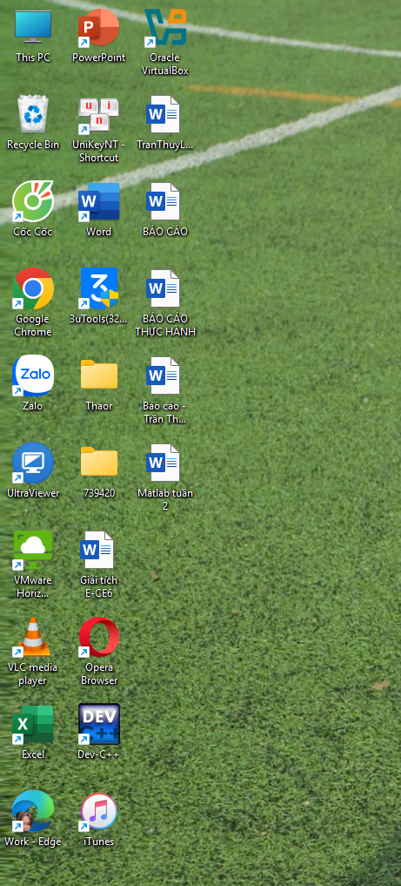
Desktop / Downloads chứa nhiều file hỗn độn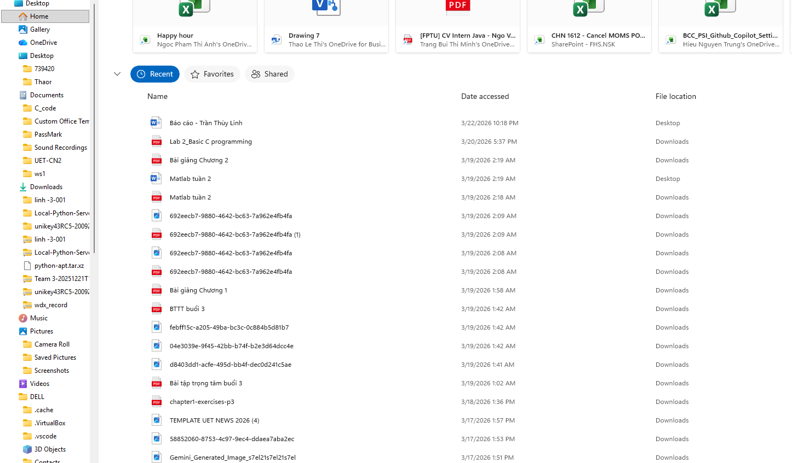
Hệ thống thư mục không có phân cấp logicII. Thiết kế hệ thống tổ chức dữ liệu
Để giải quyết triệt để vấn đề trên và hướng tới sự mở rộng lâu dài trong quá trình học tập tại Đại học Công nghệ, em đã thiết kế lại hệ thống lưu trữ theo nguyên tắc: Phân cấp logic - Đặt tên nhất quán - Dễ dàng mở rộng.
📂 Cấu trúc thư mục mới (DATA_LinhTT)
🏷️ Quy tắc đặt tên file (Naming Convention)
Để áp dụng đồng bộ cho tất cả các loại file, em sử dụng quy tắc sau (tránh sử dụng dấu cách và tiếng Việt có dấu để hạn chế lỗi khi upload lên các hệ thống):
[Ngày/Tháng/Năm]_[Tên_Môn_Học]_[Loại_Tài_Liệu]_[Tên_Chi_Tiết]_v[Phiên bản]
Ví dụ: 20241020_TinHocCoSo_BaiTap_ThucHanh1_v1.docx
[YYYYMMDD]_[Sự_kiện]_[Số_thứ_tự]
Ví dụ: 20240515_UET_Camp_001.jpg
III. Thực hiện tổ chức lại & Chiến lược sao lưu dữ liệu
Dựa trên bản thiết kế, em đã tiến hành di chuyển, đổi tên và xóa bỏ các file rác. Tiến độ thực hiện đã đạt trên 95% tổng số file trên máy tính. Các thư mục tạm như Downloads đã được làm sạch hoàn toàn.
Phân tích chiến lược sao lưu (Nguyên tắc 3-2-1)
| Phương pháp | Mô tả chi tiết | Ưu điểm | Nhược điểm |
|---|---|---|---|
| Dịch vụ Đám mây (Google Drive) | Đồng bộ hóa tự động thư mục 01_Hoc_Tap bằng Google Drive for Desktop. |
Tự động, truy cập được mọi lúc mọi nơi bằng điện thoại/máy tính khác. Không sợ hỏng phần cứng. | Phụ thuộc vào kết nối Internet. Giới hạn dung lượng miễn phí (15GB). |
| Ổ cứng ngoài (External HDD 1TB) | Sao lưu thủ công toàn bộ thư mục DATA_LinhTT định kỳ sang ổ cứng rời. |
Dung lượng lớn, chi phí thấp cho lưu trữ dài hạn. An toàn trước các cuộc tấn công mạng/mất tài khoản. | Cần thực hiện thủ công. Có rủi ro hỏng hóc vật lý do va đập, rơi vỡ. |
Tần suất sao lưu đề xuất
Real-time (Thời gian thực)
Các file học tập đang làm việc sẽ được lưu thẳng vào thư mục đã kết nối Google Drive.
1 tuần / lần (Vào tối Chủ Nhật)
Thực hiện copy toàn bộ dữ liệu mới phát sinh trong tuần vào ổ cứng ngoài để đảm bảo có một bản offline dự phòng.
IV. Đánh giá quá trình & Kết luận
❌ Thách thức gặp phải
- Mất rất nhiều thời gian ban đầu để lọc lại các file "vô danh" tải từ nhiều năm trước để xem nội dung là gì trước khi phân loại và đổi tên.
- Việc tuân thủ quy tắc đặt tên đôi khi gây cảm giác rườm rà trong những lúc cần lưu file gấp.
✅ Lợi ích đạt được
- Tiết kiệm thời gian: Không còn tình trạng bới móc từng thư mục để tìm tài liệu ôn thi.
- Tối ưu dung lượng: Quá trình lọc dữ liệu giúp phát hiện và xóa đi lượng lớn file trùng lặp (duplicate files) tải về nhiều lần, giải phóng gần 20GB dung lượng bộ nhớ.
- Sự an tâm: Nhờ chiến lược sao lưu kết hợp Cloud và HDD, em không còn lo lắng về việc mất toàn bộ bài tập lớn hay khóa luận nếu máy tính bất ngờ hỏng hóc.
Kết luận: Việc tổ chức lại dữ liệu không chỉ là một thao tác kỹ thuật máy tính mà còn rèn luyện tư duy hệ thống, logic và kỹ năng quản lý thông tin - những kỹ năng vô cùng cần thiết đối với một sinh viên ngành Công nghệ. Hệ thống này sẽ tiếp tục được duy trì và tinh chỉnh trong suốt quá trình học tập sắp tới.
Minh chứng làm bài
Bảng kết quả cấu trúc thư mục sau khi hoàn thành tổ chức

Kỹ Thuật Viết Prompt Hiệu Quả (Prompt Engineering)
I. Chủ đề, công cụ & Các tác vụ lựa chọn
Công cụ sử dụng: ChatGPT (GPT-4)
Báo cáo này nghiên cứu và thử nghiệm kỹ thuật viết prompt thông qua 3 tác vụ học tập phổ biến khác nhau để tối ưu hóa kết quả phản hồi của AI.
Tóm tắt tài liệu học thuật
Chủ đề: Biến đổi khí hậu.
Giải thích khái niệm phức tạp
Khái niệm: Máy tính lượng tử.
Tạo bộ câu hỏi ôn tập
Chủ đề: Lịch sử Trí tuệ nhân tạo (AI).
II. Thử nghiệm và Đánh giá 3 cấp độ Prompt
Mỗi tác vụ học tập được chạy thực tế trên ChatGPT với 3 mức độ viết prompt khác nhau: Cơ bản, Cải tiến, và Nâng cao.
🔴 Prompt Cơ Bản
🟡 Prompt Cải Tiến
🟢 Prompt Nâng Cao (Role-prompting & Cấu trúc hóa)
Minh chứng đoạn hội thoại chat thực tế

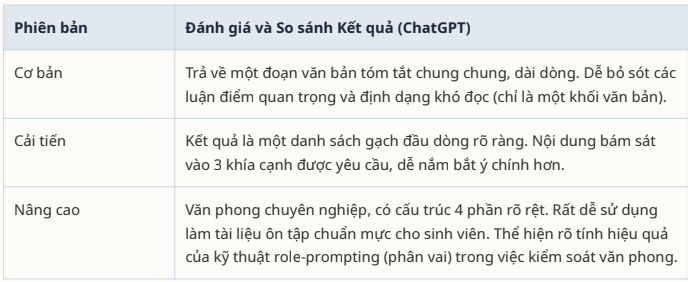
🔴 Prompt Cơ Bản
🟡 Prompt Cải Tiến
🟢 Prompt Nâng Cao (Chain-of-thought & Metaphor)
Minh chứng đoạn hội thoại chat thực tế

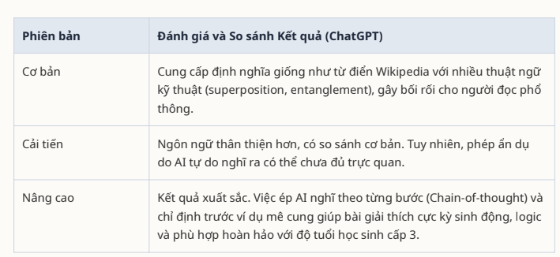
🔴 Prompt Cơ Bản
🟡 Prompt Cải Tiến
🟢 Prompt Nâng Cao (Few-shot prompting & Ràng buộc)
Minh chứng đoạn hội thoại chat thực tế

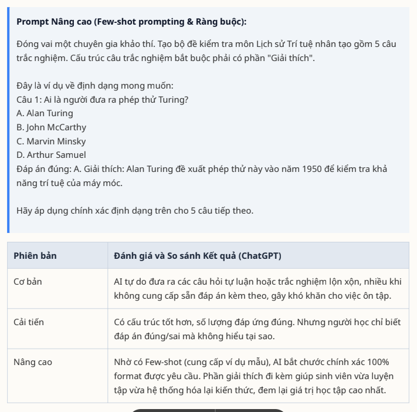
III. Phân tích hiệu quả & Công thức thiết kế prompt CREATE
Dựa trên kết quả so sánh thực nghiệm, chất lượng câu trả lời của AI tăng lên vượt trội khi áp dụng các kỹ thuật thiết kế Prompt nâng cao. Công thức cốt lõi được đúc kết lại bằng từ khóa CREATE:
Context (Bối cảnh)
Luôn cung cấp thông tin nền tảng. Bạn đang giải quyết vấn đề gì và kết quả này dành cho ai?
Role (Vai trò)
Yêu cầu AI đóng vai một chuyên gia tương ứng để tối ưu hóa văn phong và chiều sâu kiến thức.
Explicit (Hướng dẫn rõ ràng)
Tránh dùng từ đa nghĩa. Phân rã các yêu cầu lớn thành các bước nhỏ (Chain-of-thought).
Appearance (Định dạng)
Chỉ rõ định dạng đầu ra mong muốn (dạng bảng, danh sách gạch đầu dòng, cấu trúc 4 phần...).
Tone (Văn phong)
Xác định giọng điệu (học thuật, dễ hiểu, hài hước...) để đầu ra phù hợp với đối tượng tiếp nhận.
Examples (Ví dụ mẫu)
Khi yêu cầu một định dạng phức tạp, luôn cung cấp một ví dụ mẫu (Few-shot prompting) trong prompt.
Minh chứng làm bài
Báo cáo lý thuyết về các nguyên tắc viết prompt hiệu quả

Vai Trò Và Trải Nghiệm Sử Dụng Công Cụ Hợp Tác Trực Tuyến
I. Bối cảnh dự án & Thiết lập không gian làm việc
Báo cáo này minh chứng cho quá trình hoạt động cá nhân của em trong Dự án Sản xuất chuỗi nội dung truyền thông hỗ trợ kỳ thi HSA 2026 (thuộc Ban Truyền thông Đội hỗ trợ Sinh viên SGUET). Vai trò chính của em trong dự án là xây dựng kịch bản, quản lý file phương tiện (hình ảnh/video) và điều phối công việc với các thành viên khác.
Lựa chọn công cụ phù hợp với 4 nhóm tác vụ
Trello
Sử dụng bảng Kanban để theo dõi tiến độ công việc.
Tối ưu hóa: Thiết lập hệ thống Nhãn (Label) đa sắc để phân loại task (Đỏ: Khẩn cấp/Sửa lỗi, Xanh: Kịch bản, Vàng: Hậu kỳ) và tích hợp tự động hóa (Trello Butler) tự động chuyển thẻ sang cột "Done" khi hoàn thành checklist.
Google Docs
Nơi đội ngũ cùng viết, chỉnh sửa trực tiếp và phê duyệt kịch bản cho các video truyền thông.
Google Drive
Nơi lưu trữ toàn bộ source quay gốc từ máy ảnh, các file thiết kế đồ họa PSD và tài liệu liên quan.
Discord
Tạo máy chủ riêng với các kênh trò chuyện chuyên biệt để phân luồng thảo luận: #general, #script-review, #media-assets.
Hình ảnh thiết lập không gian làm việc nhóm
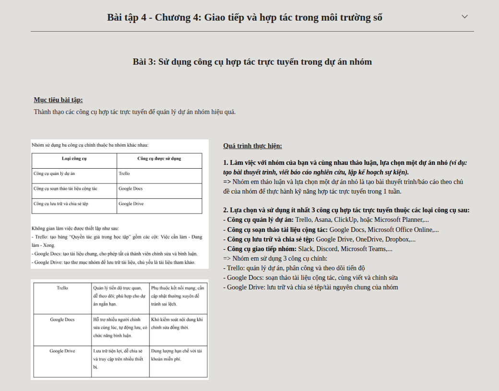
Bảng Trello Kanban phân chia công việc chi tiết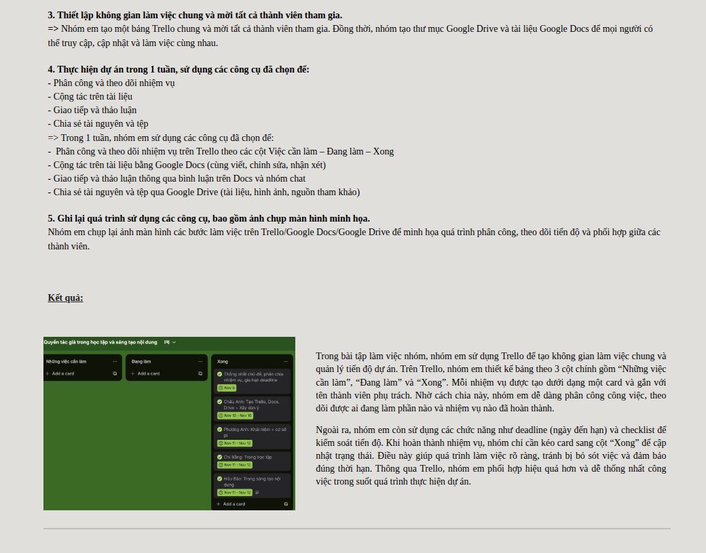
Phân luồng kênh giao tiếp trên máy chủ DiscordII. Nhật ký thực hiện nhiệm vụ cá nhân
📅 Quản lý tác vụ & Tương tác cá nhân
- Tự quản lý danh sách nhiệm vụ: 100% công việc em phụ trách trên Trello đều được viết mô tả chi tiết, đính kèm checklist các bước thực hiện nhỏ và thiết lập hạn chót (Deadline) rõ ràng. Em duy trì việc cập nhật tiến độ ít nhất 1 lần/ngày (vượt yêu cầu tối thiểu 3 lần/tuần).
- Chủ động hỗ trợ nhóm: Đạt hơn 15 lượt tương tác trong tuần cao điểm trên Discord và Google Docs, bao gồm phản hồi kịch bản, hướng dẫn các thành viên khác đồng bộ âm thanh video, và đóng góp ý kiến xây dựng.
📁 Quản lý tài nguyên & Quy chuẩn tệp tin
- Hệ thống thư mục đa cấp:
SGUET_Media$\rightarrow$HSA_Campaign_2026$\rightarrow$ chia làm 3 thư mục con logic:01_Scripts,02_RawMaterials,03_FinalExports. - Quy chuẩn đặt tên tệp: 100% tệp tin tải lên tuân thủ nguyên tắc:
[Ngày tháng]_[Tên tác vụ]_[Tên người phụ trách]_[Phiên bản]. Ví dụ:260426_KichBanVideoHSA_LinhTT_v2.docx. - Phân quyền truy cập an toàn: Chỉ cấp quyền Editor cho thư mục Kịch bản chung; thư mục tài nguyên gốc chỉ cấp quyền Viewer để tránh các thành viên lỡ tay xóa mất tệp gốc dung lượng lớn.
III. Phân tích trải nghiệm: Thách thức & Giải pháp
Quá trình hợp tác trực tuyến mang lại nhiều tiện ích nhưng cũng phát sinh các điểm nghẽn. Dưới đây là phân tích về 3 thách thức lớn nhất em gặp phải và cách em đã tự giải quyết:
💥 Xung đột phiên bản khi cộng tác soạn thảo (Version Control Conflict)
Phân tích: Khi 3 thành viên cùng truy cập vào một tệp Google Docs để viết kịch bản video vào tối ngày 22/04, tình trạng "đè chữ" lên nhau đã xảy ra. Một bạn vô tình xóa mất đoạn phân cảnh máy quay mà em vừa hoàn thành, gây gián đoạn luồng làm việc.
Giải pháp thực tế: Em yêu cầu mọi người tạm dừng gõ trực tiếp. Đề xuất quy định chung: Toàn bộ thành viên chuyển sang chế độ "Suggesting" (Đề xuất chỉnh sửa) thay vì "Editing" (Chỉnh sửa trực tiếp). Mọi thay đổi đều được ghi lại dưới dạng comment bên lề và phải được nhóm trưởng hoặc người phụ trách duyệt (Accept) thì mới hiển thị trên bản chính.
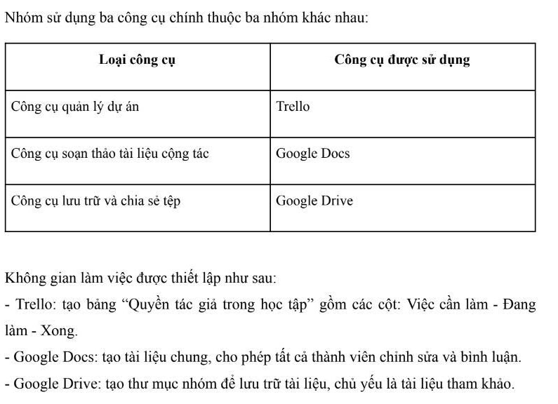
Chụp màn hình Google Docs ở chế độ Đề xuất (Suggesting)💬 Trôi nổi thông tin trên nhóm chat (Information Overload)
Phân tích: Nhóm thảo luận chung chứa cả tin nhắn công việc lẫn tin nhắn phiếm. Các đường link Google Drive quan trọng hay thông báo deadline từ Trello bị trôi rất nhanh, khiến thành viên bỏ lỡ thông tin.
Giải pháp thực tế: Tạo một kênh #announcement (Thông báo) riêng biệt trên Discord và chỉ cấp quyền gửi tin cho leader. Các đường link tài nguyên quan trọng nhất được ghim (Pin) lên đầu kênh. Đồng thời, tích hợp Trello Webhook đơn giản: tự động gửi tin nhắn cảnh báo nhắc nhở về kênh chat nhóm khi một thẻ công việc bị quá hạn (Overdue).
 Sử dụng tính năng ghim tin nhắn quan trọng để tránh thất lạc
Sử dụng tính năng ghim tin nhắn quan trọng để tránh thất lạc
💾 Giới hạn dung lượng lưu trữ đám mây & Tốc độ đồng bộ
Phân tích: Quản lý các file video gốc 4K xuất ra từ thẻ nhớ máy ảnh tốn hàng chục Gigabyte. Việc đẩy toàn bộ lên Google Drive miễn phí (15GB) ngay lập tức báo đầy dung lượng, đồng thời tốc độ tải xuống cho biên tập viên (Editor) rất chậm.
Giải pháp thực tế: Áp dụng giải pháp lưu trữ phân tầng. Các file tài liệu nhẹ (Docs, Sheets) và hình ảnh proxy (ảnh chất lượng thấp để duyệt trước) được tải lên Google Drive. Riêng file Video Raw siêu nặng, em sử dụng ổ cứng ngoài (HDD) để chép tay trực tiếp cho bạn Editor tại trường học, chỉ tải video Final đã nén lên Drive để duyệt lần cuối.
IV. Kết luận & Tầm quan trọng của kỷ luật vận hành
Sự khác biệt giữa "làm việc nhóm" và "làm việc nhóm hiệu quả" nằm ở tư duy sử dụng công cụ. Phần mềm quản lý chỉ phát huy sức mạnh tối đa khi con người thiết lập cho nó một Kỷ luật vận hành thống nhất (Quy tắc đặt tên file, quy tắc giao tiếp, phân quyền truy cập).
Là một sinh viên ngành Kỹ thuật Máy tính, việc áp dụng tư duy hệ thống (System Thinking) vào cách phân chia thư mục đa cấp và thiết lập giới hạn quyền (permissions) trong lưu trữ đám mây đã mang lại cho em những trải nghiệm thực tiễn rất giá trị, làm tiền đề vững chắc cho các dự án phát triển phần mềm phức tạp sau này.
Một số hình ảnh minh chứng khác trong quá trình triển khai dự án
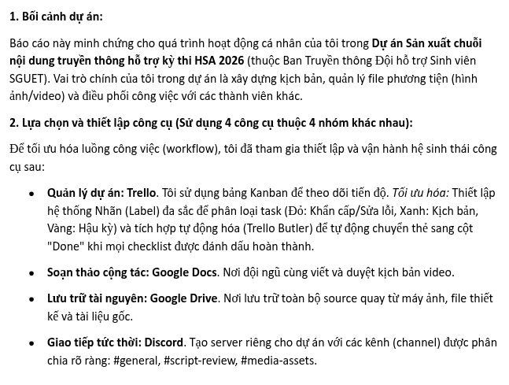
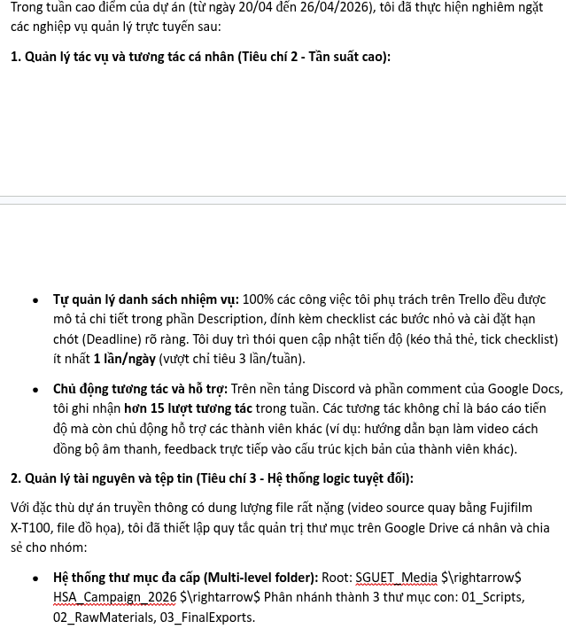
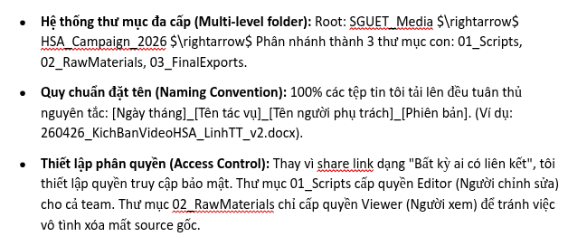
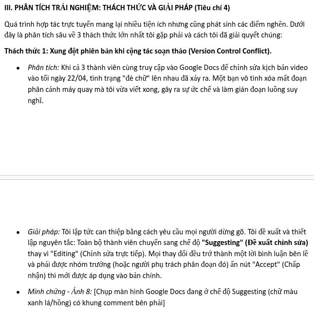
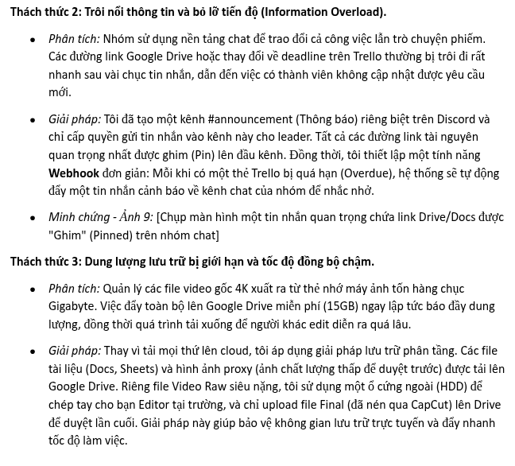
Ứng Dụng AI Tạo Sinh Trong Sáng Tạo Nội Dung Đa Phương Tiện
I. Thông tin dự án và các công cụ AI hỗ trợ
Tên sản phẩm thiết kế: Infographic: "Cẩm nang tối ưu máy ảnh Fujifilm X-T100 cho ảnh chân dung ngoại cảnh".
Mục đích: Làm tài liệu đào tạo nội bộ (training material) cho các bạn tân sinh viên K70 trong Ban Truyền thông SGUET, giúp các bạn nắm bắt nhanh thông số máy ảnh trước khi đi chụp sự kiện thực tế.
Quy tắc thực hiện: Tích hợp AI tạo sinh theo nguyên tắc AI làm nền tảng (<40%) - Con người đóng góp chuyên môn và sáng tạo (>60%).
📝 Gemini (AI Văn bản)
Hỗ trợ lên dàn ý logic, biên tập nội dung hướng dẫn thông số kỹ thuật nhiếp ảnh.
🖼️ DALL-E 3 (AI Hình ảnh)
Tạo hình ảnh minh họa concept máy ảnh, thiết bị ánh sáng theo phong cách nghệ thuật.
🎨 Canva AI (AI Thiết kế)
Sử dụng Magic Design hỗ trợ dàn trang, gợi ý các bố cục Infographic nhanh chóng.
II. Quy trình sáng tạo và tích hợp AI thực tế
Lên cấu trúc nội dung với Gemini
Kết quả từ AI: Đưa ra một dàn ý rất chuẩn về Tam giác phơi sáng (Khẩu độ, Tốc độ, ISO) và cách lựa chọn góc ánh sáng.
Đóng góp cá nhân (Tích hợp & Sửa đổi): Em loại bỏ các lý thuyết quá hàn lâm, bổ sung thêm mục "Film Simulation Recipe" (Công thức màu giả lập phim Classic Chrome) dựa trên kinh nghiệm chụp thực tế tại sân G3 UET để tăng tính thực chiến cho tài liệu.
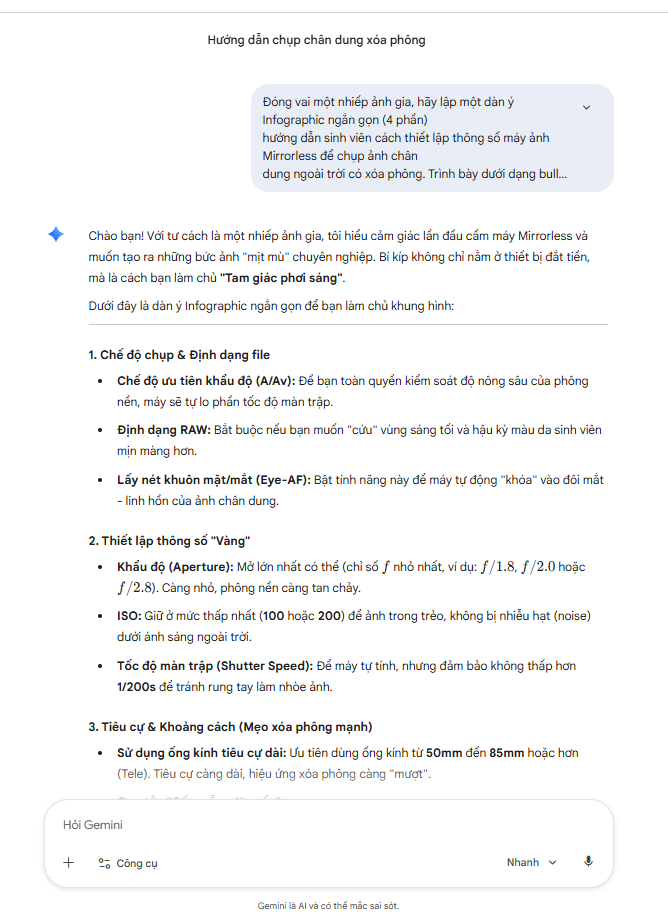
Màn hình đoạn hội thoại lập dàn ý với GeminiTạo hình ảnh minh họa với DALL-E 3
Kết quả từ AI: Tạo ra các hình minh họa phong cách vector nghệ thuật, phù hợp thị hiếu thẩm mỹ trẻ.
Đóng góp cá nhân (Tích hợp & Sửa đổi): AI vẽ sai các vòng xoay dial trên thân máy ảnh. Em đưa hình ảnh vào Photoshop/Canva để tẩy xóa, chỉnh sửa các chi tiết sai lệch cơ khí để hình ảnh minh họa giống dòng Fujifilm X-T100 thật nhất.
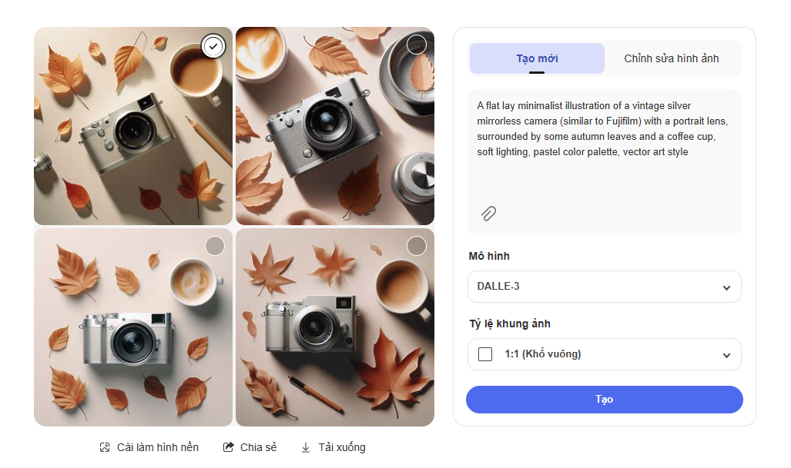
Ảnh minh họa máy ảnh vector do DALL-E 3 tạo raDàn trang với Canva AI (Magic Design)
Quy trình: Tải nội dung văn bản đã chỉnh sửa và hình ảnh đã làm sạch lên Canva, sử dụng tính năng "Magic Design" với prompt: "Infographic for Photography tips, modern student vibe".
Đóng góp cá nhân (Can thiệp thủ công 60%): Do AI sắp xếp văn bản dài bị lộn xộn, em tiến hành căn chỉnh thủ công: Đổi toàn bộ font chữ sang font nhận diện thương hiệu của SGUET, thiết lập lại phân cấp thị giác (Visual Hierarchy), và blend lại màu nền đồng bộ với các dự án khác.
III. So sánh & Đánh giá hiệu quả 3 công cụ AI
| Tiêu chí | Gemini (AI Văn bản) | DALL-E 3 (AI Hình ảnh) | Canva AI (AI Thiết kế) |
|---|---|---|---|
| Điểm mạnh | Khả năng tổng hợp logic xuất sắc. Nắm bắt tốt các khái niệm kỹ thuật (thông số khẩu độ, ISO). | Sáng tạo hình ảnh nhanh, đa dạng phong cách (từ 3D đến vector). Không lo vi phạm bản quyền hình ảnh. | Tiết kiệm thời gian căn chỉnh khung hình ban đầu. Tích hợp tốt với kho tài nguyên có sẵn. |
| Điểm hạn chế | Văn phong đôi khi quá trang trọng, giống văn bản hành chính, thiếu sự tự nhiên và "trendy" của giới trẻ. | Không hiểu sâu về kỹ thuật cơ khí. Vẽ các chi tiết phần cứng (ngàm máy ảnh, nút bấm) thường bị sai lệch logic. | Tính cá nhân hóa chưa cao. Bố cục tự động thường khá rập khuôn và phá vỡ cấu trúc text dài. |
| Sự thay đổi quy trình | Thay vì bắt đầu với trang giấy trắng, tôi dùng AI như một "bản nháp số 0". Tiết kiệm 40% thời gian lên ý tưởng. | Biến tôi từ một người đi tìm kiếm (search) ảnh stock thành một "đạo diễn" hình ảnh (prompt). | Rút ngắn khâu chọn template từ 30 phút xuống còn 3 phút. |
IV. Phân tích vai trò thực tế của AI & Đạo đức sáng tạo
🤝 AI là Co-pilot (Hành khách phụ lái)
AI giúp vượt qua "sự chật vật của khởi đầu" (phác thảo dàn ý, tìm cảm hứng hình ảnh). Tuy nhiên, chất lượng cuối cùng của sản phẩm truyền thông phụ thuộc hoàn toàn vào "Human-touch" (Sự can thiệp của con người). AI không thể tự biết được sân G3 UET lúc 4h chiều cần thông số cân bằng trắng (WB) bao nhiêu, điều đó cần trải nghiệm thực tế của con người.
⚖️ Các vấn đề đạo đức cần lưu tâm
- Tính chân thực của minh chứng: Chỉ sử dụng AI để vẽ hình ảnh minh họa mang tính trang trí nghệ thuật. Tuyệt đối không dùng AI để tạo "ảnh kết quả chụp mẫu" vì đó là sự lừa dối người xem. Ảnh mẫu chụp chân dung bắt buộc phải là ảnh thật chụp từ máy.
- Minh bạch hóa: Ghi chú dòng chữ nhỏ dưới góc Infographic: "Hình ảnh minh họa có sự hỗ trợ từ DALL-E 3" để thể hiện sự liêm chính của người làm truyền thông.
Minh chứng làm bài
Infographic Cẩm nang tối ưu máy ảnh Fujifilm X-T100 hoàn thiện
Sử Dụng Trí Tuệ Nhân Tạo (AI) Có Trách Nhiệm Trong Học Thuật
I. Phân tích chính sách sử dụng AI tại trường đại học
🏫 Chính sách tại VNU-UET
Đại học Công nghệ (VNU-UET) đề cao sự đổi mới sáng tạo, tuy nhiên các quy định về liêm chính học thuật (Academic Integrity) được quy định rất nghiêm ngặt:
- Không cấm hoàn toàn nhưng phải minh bạch: Sinh viên được phép dùng AI để tìm tài liệu, gợi ý dàn ý, hoặc giải thích các khái niệm phức tạp (như Giải tích, Vật lý, Hệ điều hành).
- Nghiêm cấm đạo văn do AI tạo ra: Việc sao chép nguyên văn (copy-paste) kết quả từ AI và nộp dưới dạng bài làm cá nhân/báo cáo bị coi là hành vi gian lận học thuật và sẽ bị xử lý kỷ luật.
🌍 So sánh quốc tế & Nhận định cá nhân
So với một số trường đại học quốc tế (như Sciences Po ở Pháp cấm hoàn toàn ChatGPT thời gian đầu), chính sách ngầm định hiện tại của các trường kỹ thuật như VNU-UET mang tính cởi mở và thực tế hơn, coi AI là "công cụ hỗ trợ" (tool) chứ không phải là "tác giả" (author).
Nhận định cá nhân: Đây là hướng tiếp cận đúng đắn. Đối với sinh viên Kỹ thuật Máy tính, cấm AI là đi ngược lại sự phát triển. Tuy nhiên, việc siết chặt khâu trích dẫn là cần thiết để sinh viên không bị thui chột tư duy logic.
II. Thực hiện nhiệm vụ học tập với sự hỗ trợ của AI
Nhiệm vụ thực hiện: Chuẩn bị dàn ý thuyết trình chủ đề "Hiện tượng Tắc nghẽn (Deadlock) trong Hệ điều hành".
Đánh giá & Chỉnh sửa: Dàn ý AI đưa ra rất logic nhưng thiếu các ví dụ thực tế và mối liên kết với bài giảng trên lớp. Em đã tự viết lại định nghĩa 4 điều kiện bằng văn phong cá nhân, bổ sung ví dụ kẹt xe ở ngã tư để minh họa cho điều kiện Circular Wait, và đối chiếu các thuật ngữ kỹ thuật chính xác.
Trích dẫn APA minh bạch
OpenAI. (2026). ChatGPT (Phiên bản GPT-4) [Mô hình ngôn ngữ lớn]. https://chat.openai.com. (Được sử dụng vào ngày 24/05/2026 để lập dàn ý chủ đề Deadlock).
III. Phân tích đạo đức & Bộ nguyên tắc cá nhân
Ranh giới giữa Hỗ trợ hợp lý và Gian lận học thuật
Ranh giới này nằm ở "tính nguyên bản" của tư duy. Sử dụng AI để brainstorm ý tưởng, sửa lỗi ngữ pháp, hay lập trình viên dùng AI để tìm lỗi (debug) code là sự hỗ trợ hợp lý. Ngược lại, việc yêu cầu AI viết hộ 100% bài luận hay tạo toàn bộ mã nguồn đồ án rồi nộp dưới tên mình là gian lận học thuật.
Bộ 5 nguyên tắc cốt lõi của bản thân khi sử dụng AI
IV. Infographic "Sử dụng AI có trách nhiệm trong học thuật"
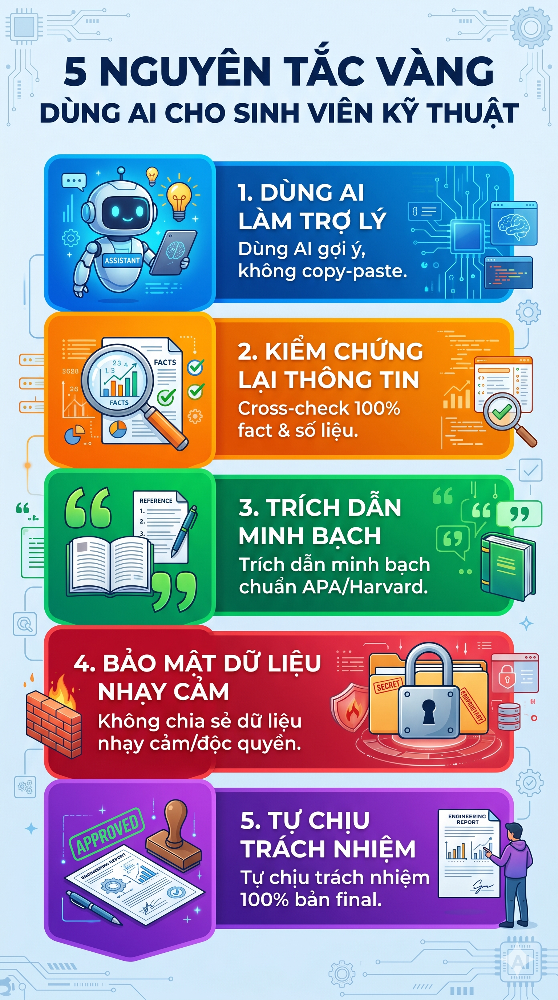
Minh chứng làm bài
Ghi nhận hội thoại chat với AI làm dàn ý Deadlock (1)

Ghi nhận hội thoại chat với AI làm dàn ý Deadlock (2)
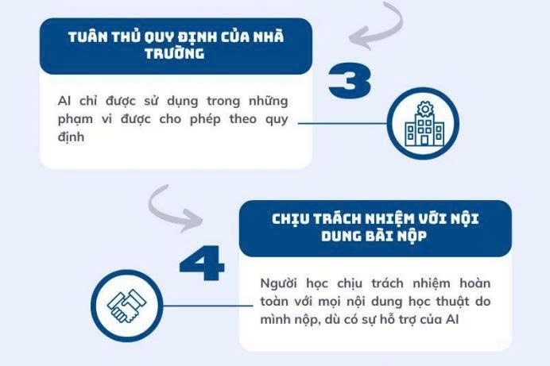
Tổng Kết Quá Trình Học Tập & Liên Hệ
Tổng kết giá trị môn học
Trải qua các bài tập thực hành từ quản lý tệp tin cơ bản đến các kỹ năng công nghệ nâng cao như Prompt Engineering và ứng dụng Generative AI có trách nhiệm, bản thân em đã tích lũy được những nền tảng tư duy số vững chắc.
Môn học không chỉ cung cấp các thao tác kỹ thuật đơn thuần mà quan trọng hơn là định hình tư duy hệ thống (System Thinking) và tác phong liêm chính khoa học trong môi trường số đại học.
Những công cụ như Trello, Google Workspace, hay các AI tạo sinh như Gemini, ChatGPT giờ đây đã trở thành những người bạn đồng hành đắc lực, giúp em tối ưu hóa thời gian và nâng cao hiệu suất học tập đáng kể cho các học kỳ chuyên ngành Kỹ thuật Máy tính sắp tới.
Liên Hệ Với Mình
Trường Đại học Công nghệ - Đại học Quốc gia Hà Nội